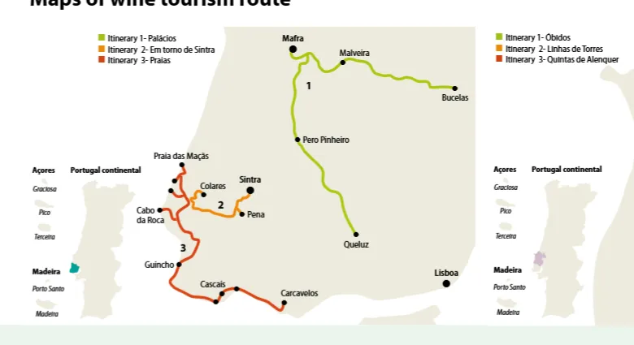
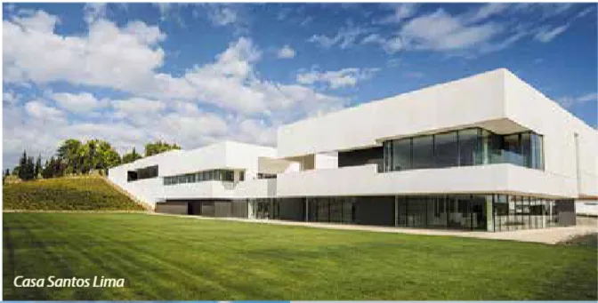
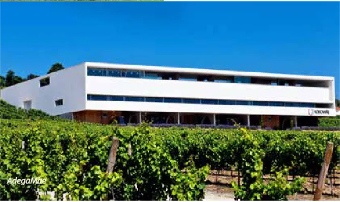

Kapitel 4 · Die portugiesischen Weinregionen
Weinregion Lisboa
Kennzahlen (2022)
Rebfläche: 19.869 ha
Gesamterzeugung: 119.436.200 Liter
Durchschnittsertrag: 6.000 Liter/ha
Zertifizierte Weintypen: 90 % (IG und DO)
Geschichte
Im Raum Lissabon werden seit der Antike Reben angebaut. Es gibt Spuren der Phönizier, Griechen, Römer und Westgoten. Im Mittelalter nahm ab dem 12. Jahrhundert die Zahl der Orden erheblich zu, allen voran der Zisterzienserorden in Alcobaça, wo sich die Anhänger des heiligen Bernhard dem Weinbau widmeten. Neben ihren geistlichen Aufgaben gab der Orden christlichen Bürgern Arbeit und Berufsausbildung. Die früher „Estremadura“ genannten Weine wurden viel getrunken, gewannen großes Ansehen, entwickelten sich zu einem der wichtigsten Wirtschaftsprodukte der Region und wurden mit einer der besten Weinregionen des Landes gleichgesetzt, sowohl in der Sortenvielfalt als auch in der Erzeugung.

Caldas da Rainha
Óbidos
1
Bombarral

Terroir
Klima nach Köppen-Geiger:
Csb – feuchtgemäßigtes Klima mit sommerlicher Trockenzeit. Klimatisch liegt die Region im Übergang zwischen der Zone feuchter, beständiger Westwinde und der Zone trockener Sommer. Das Klima ist gemäßigt ohne große Temperaturschwankungen. Indizes des MCC-Systems (Tonietto & Carbonneau, 2004): Die Nähe zum Atlantik und das wellige Relief machen die Region zu einem eigenen Topoklima. Das Klima ist küstennah, mit heliothermischem Index (HI): −1, Kühle-Nacht-Index (CI): +1, Trockenheitsindex (DI): +1. Die Klimarisiken sind gering: Frost zu Frühlingsbeginn, Wetterereignisse während der Blüte und selten Hagel im Mai.
Niederschlag: 600–700 mm
Geologie und Bodenkunde:
Topografie: Das Relief ist nicht sehr hoch, außer im Süden, wo einige Basalt- und Granitschichten zutage treten; die Region beruht fast vollständig auf sekundären Ton-Kalk- und Sand-Ton-Formationen. Im zentralen Teil liegen an den sanften Hügelhängen die größten Weinberge der Region. Im äußersten Norden erstreckt sich ein weites Rebgebiet von den Hängen der Serras de Candeeiros und de Aire bis zum Meer.
Lithologie: Die meisten Weinberge stehen auf braunen und roten mediterranen Böden oder auf Kalkböden.
Die Weinberge liegen meist zwischen 10 und 300 Metern über dem Meer.
Erzeugte Weintypen
IG-Wein Lisboa bzw. Landwein Lisboa
(mit den Unterregionen Estremadura und Alta Estremadura): Rot, Weiß, Rosé, Schaumwein, Likörwein, leichter Wein.
DO-Weine Alenquer, Arruda, Colares und Torres Vedras (VQPRD):
Rot und Weiß,
DO-Weine Bucelas: Weiß und Schaumwein,
DO-Weine Carcavelos (VLQPRD): roter und weißer Likörwein,
DO-Weine Óbidos: Rot, Weiß, Rosé und Schaumwein,
DO-Weine Encostas d’Aire (VQPRD): Rot, Weiß, Rosé und „Medieval de Ourém“,
DO Lourinhã: Aguardente Vínica (Weinbrand).
Regionale Kontakte
Technische Informationen: Comissão Vitivinícola da Região de Lisboa (Weinbaukommission der Region Lisboa), Rua Cândido dos Reis, Apartado 145, 2564-910 Torres Vedras, Tel.: 261 316 724, E-Mail: cvrlisboa@cvrlisboa.com,
Website: http://www.vinhosdelisboa.com/
Kulturelle Informationen zum Wein der Region: Confraria dos Enófilos da Estremadura, Citarão (Bruderschaft der Weinfreunde der Estremadura) – EN 8, Apartado 69, 2544-909 Bombarral. Museu Nacional do Vinho (Nationales Weinmuseum), Rua de Leiria, Olival Fechado, 2460-059 Alcobaça, Tel.: 213 506 700.
Hochschulen und Weinbauforschung: Instituto Superior de Agronomia, ISA, Tapada da Ajuda, 1349-017 Lissabon;
Website: www.isa.utl.pt
Zertifizierungsstelle: Comissão Vitivinícola da Região de Lisboa, Rua Cândido dos Reis – Apartado 145, 2560-312 Torres Vedras, Tel.: 261 316 724 – Website: www.vinhosdaestremadura.pt, E-Mail: cvrlisboa@cvrlisboa.com
Weintourismus: Rota da Vinha e do Vinho – Região de Turismo do Oeste (Wein- und Rebenroute – Tourismusregion Oeste), Rua Direita, 2510 Óbidos, Tel. 262 955 060,
Website: www.rotavinhooeste.com
Botanik (Biodiversität) und zugelassene Sorten
Rotweine: Alfrocheiro, Alicante Bouschet, Amostrinha, Aragonez (Tinta Roriz), Baga, Bastardo, Bonvedro, Cabernet Franc, Cabernet Sauvignon, Caladoc, Camarate, Carignan, Castelão, Cinsaut, Grand Noir, Grenache, Grossa, Jaen, Merlot, Moreto, Negra Mole, Parreira Matias, Petit Verdot, Pinot Noir, Preto Martinho, Ramisco, Rufete, Syrah, Tinta Barroca, Tinta Caiada, Tinta Carvalha, Tinta Miúda, Tintinha, Tinto Cão, Touriga Franca, Touriga Nacional, Trincadeira (Tinta Amarela), Cabinda, Molar, Monvedro, Preto Cardana, Sousão, Tannat, Tinta Lisboa, Tinta Pomar, Valbom, Zinfandel, Fernão Pires Rosado®, Gewürztraminer® und Pinot Gris®.
Weißweine: Alicante Branco, Almafra, Alvarinho, Antão Vaz, Arinto (Pedernã), Bical, Boal Branco, Boal Espinho, Cerceal Branco, Chardonnay, Diagalves, Fernão Pires (Maria Gomes), Galego Dourado, Jampal, Malvasia, Malvasia Rei, Moscatel Graúdo, Rabo de Ovelha, Riesling, Sauvignon, Seara Nova, Sercial (Esgana Cão), Síria (Roupeiro), Tália, Tamarez, Trincadeira Branca, Trincadeira das Pratas, Viognier, Viosinho, Vital, Alvadurão, Cercial, Chenin, Encruzado, Loureiro, Malvasia Fina, Marquinhas, Pinot Blanc, Ratinho, Semillon und Verdelho.
Renommierte Weingüter
in der Region: Casa Santos Lima
Casa Santos Lima ist ein Familienunternehmen für Erzeugung, Abfüllung und Vermarktung portugiesischer Weine. Es ist in den Regionen Lisboa, Algarve, Alentejo, Douro und Vinho Verde tätig, erzeugt 35 Millionen Flaschen und exportiert rund 90 Prozent davon in über 50 Länder auf 5 Kontinenten. Die eigene Rebfläche umfasst 600 Hektar. In den letzten Jahren war es einer der meistprämierten portugiesischen Erzeuger bei den wichtigsten nationalen und internationalen Weinwettbewerben. DFJ Vinhos ist ein 1998 gegründetes Familienunternehmen; José Neiva Correia ist Inhaber und Kellermeister. Es exportiert 99 % seiner 10 Millionen Flaschen in über 50 Länder. Die eigenen Weinberge umfassen 250 ha, mit Verträgen mit kleinen Erzeugern mehr als 600 ha. Die Güter betreiben integrierten Weinbau, eine Methode nach den Grundsätzen nachhaltiger Landwirtschaft. Quinta do Gradil: Die Quinta do Gradil gehörte den Marquis von Pombal. Das 200 Hektar große Gut hat 120 Hektar Weinberge. AdegaMãe: AdegaMãe gehört zur Gruppe Riberalves. Die hier abgebildete Kellerei überblickt ihren 40 Hektar großen Weinberg in Torres Vedras und erzielt einen Jahresumsatz von 4,4 Millionen Euro. Quinta da Almiara: Das Gut hat 160 Hektar Weinberge und liegt in landschaftlich sehr reizvoller Gegend in der Gemeinde S. Mamede da Ventosa in Torres Vedras. Seine Weine entstehen ausschließlich aus Trauben des Gutes.




Lagerkapazität: 4 Millionen Liter. Quinta da Chocapalha, Adega Cooperativa de Dois Portos, CRL, Adega Cooperativa da Vermelha, CRL, Quinta de Pancas – Vinhos, S.A.